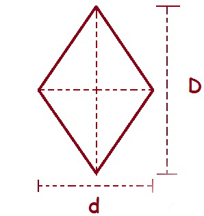

|

A=(D*d/)2 | O losango é um quadrilátero que possui os quatro lados congruentes, ou seja, com a mesma medida. É composto também por duas diagonais: diagonal maior (D) e diagonal menor (d). Essas duas diagonais se cruzam no ponto médio de cada uma (exatamente no meio delas). Os ângulos opostos de um losango também são congruentes.Compreendidas as características de um losango, vamos descobrir como sua área é calculada. A área do losango depende das medidas das duas diagonais, dizemos então que a área é dada em função das diagonais do losango. A fórmula para o cálculo da área do losango é:Onde, D → é a medida da diagonal maior d → é a medida da diagonal menor. |